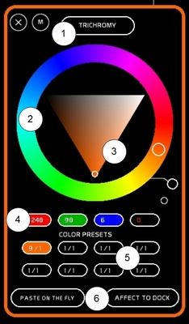
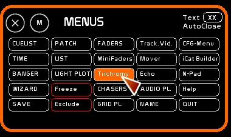
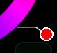
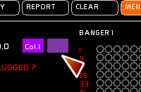

This window enables you to work with additive color mixing on various channels:
This module is based on red LEE 106, green LEE 124, blue LEE 119, and yellow LEE 102. In terms of number of spotlights, you'll need twice as many blue because transmission is so low.

The Trichromy window is composed as follows (from top to bottom):
Click [Trichro] or press [F7]

! Be aware that a dock that contains a color-preset is unlinked ( a clear or something else is recorded in place of ) it will appear in flashing color.
Repeat these operations for Green and Blue .
! Use [MODIFY] to add or remove a channel from a color assignment: if the channel selected is already assigned inside, it will be removed. If it is not present, it will be added.
Moving around the hue wheel, you change the color inside the val/sat triangle.
RGBY levels are taken from the sat/val triangle and sent to the chosen color-preset.
The logical progression of this module is HUE TINT → SATURATION/VALUE → SPOTLIGHTS.
You can, through using the sat/val triangle, work in deep tints, as well as pastels very easily.
The Hue wheel is assignable in midi.
Click the circle to enable midi-out of its value to be sent to a midi device (rotary knob).

For more information about midi and how to assign, see Midi Configuration and Midi Assignment
In the text feedback section of the screen (line 1) there are two rectangles that display the color of the active dock and the saturation and intensity of the active dock.
Also, the dock number of the active dock is displayed.
